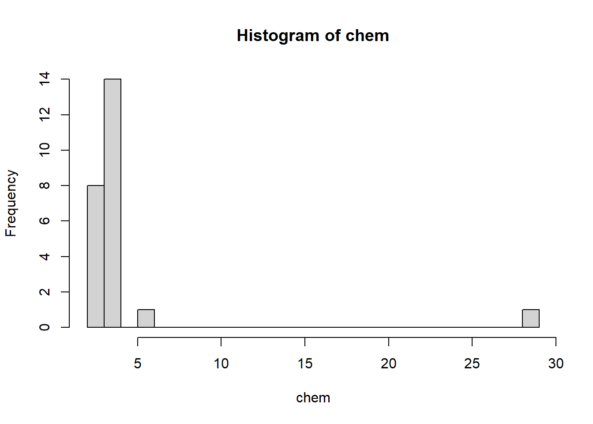
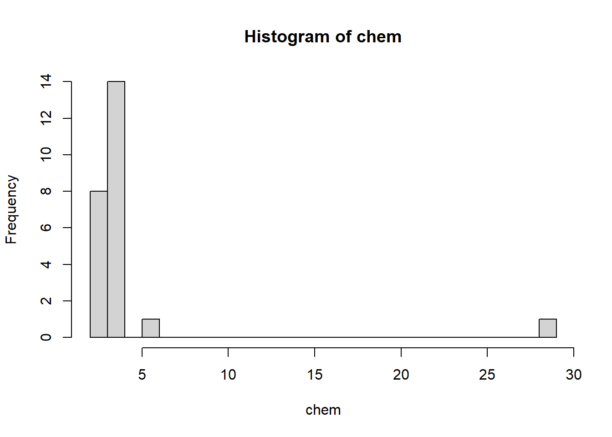

[1] 2.20 2.20 2.40 2.40 2.50 2.70 2.80 2.90 3.03 3.03 3.10 3.37
[13] 3.40 3.40 3.40 3.50 3.60 3.70 3.70 3.70 3.70 3.77 5.28 28.95[1] 4.280417Introductory statistics courses describe and discuss inferential methods based on the assumption that data is Normally distributed. However, we never know the true distribution from which our data has arisen; even from the sample, we may observe that it deviates from Normality in various ways. To begin with, we might observe that the data has heavier tails than a Normal distribution. Second, the data could suggest that the originating distribution is heavily skewed, unlike the symmetric Normal.
Continuing to use Normal based methods will result in confidence intervals and hypothesis tests that have low power. Instead, statisticians have developed a suite of methods that are robust to the assumption of Normality. These techniques may be sub-optimal when the data is truly Normal, but they quickly outperform the Normal-based method as soon as the distribution starts to deviate from Normality.
A third way in which the Normal-based method could breakdown is when our dataset has extreme values, referred to as outliers. In such cases, many investigators will drop the anomalous points and proceed with the analysis on the remaining observations. This is not ideal for the following reasons:
Robust statistical techniques are those that have high efficiency over a collection of distributions. Efficiency can be measured in terms of variance of a particular estimator, or in terms of power of a statistical test. In this topic, we shall introduce the concept of robustness and estimators of location and scale that have this property. Although we only touch on basic statistics in this topic, take note that robust techniques exist for regression and ANOVA as well. It is a vastly under-used technique.
For the rest of this topic, let us settle on some notation. Suppose we have an i.i.d sample \(X_i\) from a continuous pdf \(f\).
For this topic, we shall use a couple of datasets that are clearly not Normal.
Example 5.1 (Copper in Wholemeal Flour) The dataset chem comes from the package MASS. The data was recorded as part of an analytical chemistry experiment – the amount of copper (\(\mu g^{-1}\)) was measured in wholemeal flour was measured using 24 samples.

[1] 2.20 2.20 2.40 2.40 2.50 2.70 2.80 2.90 3.03 3.03 3.10 3.37
[13] 3.40 3.40 3.40 3.50 3.60 3.70 3.70 3.70 3.70 3.77 5.28 28.95[1] 4.280417Although 22 out of the 24 points are less than 4, the mean is 4.28. This statistic is clearly being affected by the largest two values. Removing them would yield a summary statistic that is more representative of the majority of observations. This topic is about techniques that will work well even in the presence of such large anomalous values.
The second dataset is also from a textbook:
Example 5.2 (Self-awareness Dataset) For a second dataset, we use one on self-awareness from (Wilcox and R 2011), where participants in a psychometric study were timed how long they could keep a portion of an apparatus in contact with a specified target.
awareness <- c(77, 87, 88, 114, 151, 210, 219, 246, 253, 262, 296, 299, 306,
376, 428, 515, 666, 1310, 2611)
hist(awareness, breaks=10)[1] 448.1053Just like the data in Example 5.1, this data too is highly skewed to the right. The mean of the full dataset is larger than the 3rd quartile!
The focus of this course is on the computational aspects of performing data analyses. However, this section is a little theoretical. It exists to provide a better overview of robust statistical techniques.
Section 5.4.1 introduces an approach for comparing two estimators in general. The remaining subsections (Section 5.5 onwards) briefly list ways in which robust statistics are evaluated.
Suppose we wish to estimate a parameter \(\theta\) of a distribution using a sample of size \(n\). We have two candidate estimators \(\hat{\theta}\) and \(\tilde{\theta}\).
Definition 5.1 (Asymptotic Relative Efficiency (ARE)) The asymptotic relative efficiency of \(\tilde{\theta}\) relative to \(\hat{\theta}\) is
\[ ARE(\tilde{\theta}; \hat{\theta}) = \lim_{n \rightarrow \infty} \frac{\text{variance of } \hat{\theta}}{\text{variance of } \tilde{\theta}} \]
Usually, \(\hat{\theta}\) is the optimal estimator according to some criteria.
When using \(\hat{\theta}\), we only need \(ARE\) times as many observations as when using \(\tilde{\theta}\).
Here are a couple of examples of commonly used estimators and their ARE.
Example 5.3 (Median versus Mean) If our data is known to originate from a Normal distribution, due to its symmetry, we can use the sample median or the sample mean to estimate \(\mu\). Let \(\hat{\theta} = \bar{X}\) and \(\tilde{\theta} = X_{(1/2)}\).
Then it can be shown that
\[ ARE(\tilde{\theta}; \hat{\theta}) = 2/\pi \approx 64\% \]
The sample median is less efficient than the sample mean, when the true distribution is Normal.
Here is an example of when robust statistics prove to be superior to non-robust ones.
Example 5.4 (Contaminated Normal Variance Estimate) Suppose first that we have \(n\) observations \(Y_i \sim N(\mu, \sigma^2)\), and we wish to estimate \(\sigma^2\). Consider the two estimators:
In this case, when the underlying distribution truly is Normal, we have that \[ ARE(\tilde{\sigma}^2; \hat{\sigma}^2) = 87.6\% \]
However, now consider a situation where \(Y_i \sim N(\mu, \sigma^2)\) with probability \(1 - \epsilon\) and \(Y_i \sim N(\mu, 9\sigma^2)\) with probability \(\epsilon\). Let us refer to this as a contaminated Normal distribution.

As you can see from the diagram above, the two pdfs are almost indistinguishable by eye. However, the ARE values are very different.
| \(\epsilon\) | ARE |
|---|---|
| 0 | 87.6% |
| 0.01 | 144% |
The usual \(s^2\) loses optimality very quickly; we can obtain more precise estimates using \(\tilde{\sigma}^2\). This example was taken from section 5.5 of Venables and Ripley (2013).
There are three main approaches of assessing the robustness of an estimator. Let us cover the intuitive ideas here. In this section, \(F\) refers to the cdf from which the sample was obtained.
The location parameter of a distribution is a value that characterises “a typical” observation, or the middle of the distribution. It is not always the mean of the distribution, but in the case of a symmetric distribution it will be.
Before we introduce robust estimators for the location, let us revisit the most commonly used one - the sample mean. Suppose we have observed \(x_1, x_2, \ldots, x_n\), a random sample from a \(N(\mu,\, \sigma^2)\) distribution. As a reminder, here is how we derive the MLE for \(\mu\).
The likelihood function is \[ L(\mu, \sigma^2) = \prod_{i=1}^n \frac{1}{\sqrt{2 \pi \sigma^2}} e^{-(x_i - \mu)^2 / (2\sigma^2) } \] The log-likelihood is \[ \log L = l(\mu, \sigma^2) = -n \log \sigma - \frac{n}{2} \log(2\pi) - \frac{1}{2\sigma^2} \sum_{i=1}^n (x_i - \mu)^2 \tag{5.1}\]
Setting the partial derivative with respect to \(\mu\) to be 0, we can solve for the MLE: \[\begin{eqnarray*} \frac{\partial l }{\partial \mu} &=& 0 \\ \frac{1}{\sigma^2} \sum_{i=1}^n (x_i - \hat{\mu}) &=& 0 \\ \hat{\mu} &=& \bar{x} \end{eqnarray*}\]
Observe that in Equation 5.1, we minimised the sum of squared errors, which arose from minimising \[ \sum_{i=1}^n - \log f (x_i - \mu) \] where \(f\) is the standard normal pdf. Instead of using \(\log f\), Huber proposed using alternative functions (let’s call the function \(\rho\)) to derive estimators (Huber 1992). The new estimator corresponds to \[ \arg \min_\mu \sum_{i=1}^n \rho (x_i - \mu) \tag{5.2}\]
There are constraints on the choice of \(\rho\) above, but we can understand the resulting estimator through \(\rho\). For instance, \(\psi = \rho'\) is referred to as the influence function, which measures the relative change in a statistic as a new observation is added. To find the \(\hat{\mu}\) that minimised Equation 5.3, it is equivalent to setting the derivative to zero and solving for \(\hat{\mu}\): \[ \sum_{i=1}^n \psi (x_i - \mu) = 0 \tag{5.3}\]
Note that, in general, the use of the sample mean corresponds to the use of \(\rho(x) = x^2\). In that case, \(\psi\) is unbounded, which results in a lot of importance/weight placed on very large values. Robust estimators should have a bounded \(\psi\) function.
\[ \psi(x) = 2x,\; x \in \mathbb{R} \]
The approach outlined above - the use of \(\rho\) and \(\psi\) to define estimators, gave rise to a class of estimators known as M-estimators, since they are MLE-like. In the following sections, we shall introduce estimators corresponding to various choices of \(\rho\). It is not always easy to identify the \(\rho\) being used, but inspection of the form of \(\psi\) leads to an understanding of how much emphasis the estimator places on large outlying values.
The \(\gamma\)-trimmed mean \((0 < \gamma \le 0.5)\) is the mean of a distribution after the distribution has been truncated at the \(\gamma\) and \(1-\gamma\) quantiles. Note that the truncated function has to be renormalised in order to be a pdf.
In formal terms, suppose that \(X\) is a continuous random variable with pdf \(f\). The usual mean is of course just \(\mu = \int x f(x) dx\). The trimmed mean of the distribution is
\[ \mu_t = \int_{q_{f,\gamma}}^{q_{f,1-\gamma}} x \frac{f(x)}{1 - 2 \gamma} dx \tag{5.4}\]
Using the trimmed mean focuses on the middle portion of a distribution. The recommended value of \(\gamma\) is (0, 0.2]. For a sample \(X_1, X_2, \ldots, X_n\), the estimate is computed (see Wilcox and R (2011) page 54) using the following algorithm:
It can be shown that the influence function for the trimmed mean is \[ \psi(x) = \begin{cases} x, & -c < x < c \\ 0, & \text{otherwise} \end{cases} \] which indicates that, with this estimator, large outliers have no effect on the estimator.
The Winsorised mean is similar to the trimmed mean in the sense that it modifies the tail of the distribution. However, it works by replacing extreme observations with fixed moderate values. The corresponding \(\psi\) function is
\[ \psi(x) = \begin{cases} -c, & x < - c \\ x, & |x| < c \\ c, & x > c \end{cases} \]
Just like in the trimmed mean case, we decide on the value \(c\) by choosing a value \(\gamma \in (0, 0.2]\). To calculate the Winsorised mean from a sample \(X_1, X_2, \ldots, X_n\), we use the following algorithm:
Note that the trimmed mean and the Winsorised mean are no longer estimating the population distribution mean \(\int x f(x) dx\). The three quantities coincide only if the population distribution is symmetric.
When this is not the case, it is important to be aware of what we are estimating. For instance, using the trimmed/winsorised mean is appropriate if we are interested in what a “typical” observation in the middle of the distribution looks like.
Just as in Section 5.6.1, the MLE of the population variance \(\sigma^2\) is not robust to outliers. It is given by \[ s^2 = \frac{1}{n} \sum_{i=1}^n (x_i - \bar{x})^2 \]
Here are a few robust alternatives to this estimator. However, take note that, just like in the case of location estimators, the following estimators are not estimating the standard deviation. We can modify them so that if the underlying distribution truly is Normal, then they do estimate \(\sigma\). However, if the distribution is not Normal, we should treat them as they are: robust measures of the spread of the distribution.
For a random variable \(X \sim f\), the mean absolute deviation \(w\) is defined by \[ P(|X - q_{f,0.5} | \le w) = 0.5 \] We sometimes refer to \(w\) as \(MAD(X)\). In other words, it is the median of the distribution associated with \(|X - q_{f,0.5}|\); it is the median of absolute deviations from the median.
If observations are truly from a Normal distribution, MAD does not estimate \(\sigma\). Instead, it can be shown in this case that \(MAD\) estimates \(z_{0.75} \sigma\). Hence, in practice, MAD is divided by \(z_{0.75}\) so that it coincides with \(\sigma\) if the underlying distribution is Normal.
Proposition 5.1 (MAD for Normal) For \(X \sim N(\mu, \sigma^2)\), the following property holds: \[ \sigma \approx 1.4826 \times MAD(X) \]
Proof. Note that, since the distribution is symmetric, \(\text{median}(X) = \mu\). Thus \[\begin{eqnarray*} MAD(X) &=& \text{median}(| X - \text{median(X)}|) \\ &=& \text{median}(| X - \mu |) \end{eqnarray*}\]
Thus, the \(MAD(X)\) is a value \(q\) such that \[ P(| X - \mu | \le q ) = 0.5 \] Equivalently, we need \(q\) such that \[ P\left( \left| \frac{X - \mu}{\sigma} \right| \le q/\sigma \right) = P(|Z| \le q / \sigma) = 0.5 \] Remember that we can retrieve values for the standard Normal cdf easily from R or Python:
\[\begin{eqnarray*} P(-q / \sigma \le Z \le q / \sigma) &=& 0.5 \\ 1 - 2 \times \Phi(-q / \sigma) &=& 0.5 \\ -q / \sigma &=& -0.6745 \sigma \\ q &=& 0.6745 \sigma \end{eqnarray*}\]
Thus \(MAD(X) = 0.6745 \sigma\). The implication is that we can estimate \(\sigma\) in a standard Normal with \[ \hat{\sigma} \approx \frac{1}{0.6745} MAD(X) \]
The general definition of \(IQR(X)\) is \[ q_{f, 0.75} - q_{f,0.25} \]
It is a linear combination of quantiles. Again, we can modify the IQR so that, if the underlying distribution is Normal, we are estimating the standard deviation \(\sigma\).
Proposition 5.2 (IQR for Normal) For \(X \sim N(\mu, \sigma^2)\), the following property holds:
\[ IQR(X) \approx 1.35 \times \sigma \]
Proof. For \(X \sim N(\mu, \sigma^2)\), let \(q_{0.25}\) and \(q_{0.75}\) represent the 1st and 3rd quartiles of the distribution.
\[\begin{eqnarray*} P(X \le q_{0.25}) &=& 0.25 \\ P \left(\frac{X - \mu}{\sigma} \le \frac{q_{0.25} - \mu}{\sigma} \right) &=& 0.25 \\ P \left(Z \le \frac{q_{0.25} - \mu}{\sigma} \right) &=& 0.25 \end{eqnarray*}\]
Thus (from R or Python2) we know that
\[\begin{eqnarray*} \frac{q_{0.25} - \mu}{\sigma} = z_{0.25} &=& -0.675 \\ \therefore q_{0.25} &=& \mu - 0.675 \sigma \end{eqnarray*}\]
Similarly, we can derive that \(q_{0.75} = \mu + 0.675 \sigma\). Now we can derive that \[ IQR(X) = q_{0.75} - q_{0.25} = 1.35 \sigma \]
The implication is that, from sample data, we can estimate \(\sigma\) from the sample IQR using: \[ \hat{\sigma} = \frac{IQR(\{X_1, \ldots X_n\})}{1.35} \]
To begin, let us apply the three estimators of location to the chemical dataset.
Example 5.5 (Location Estimates: Copper Dataset)
As we observe, the robust estimates are less affected by the extreme and isolate value 28.95. They are more indicative of the general set of observations.
Now we turn the scale estimators for the self-awareness dataset.
Example 5.6 (Scale Estimates: Copper Dataset)
In this topic, we have introduced the concept of robust statistics. Understanding how these methods work requires a large amount of theoretical derivations and set-up. However, although we have not gone into much depth in the notes, we shall investigate the value of these methods in our tutorials.
Notice also that we have not discussed standard errors for these estimators; we shall revisit that idea in the topic on simulation.
median_abs_deviation(), trim_mean(), mstats.winsorize() methods in Python.